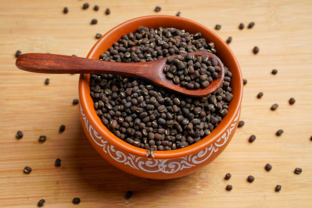
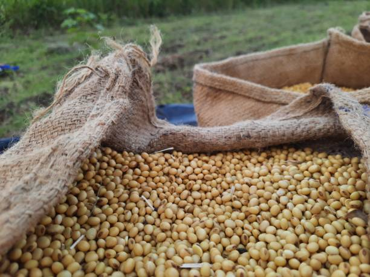
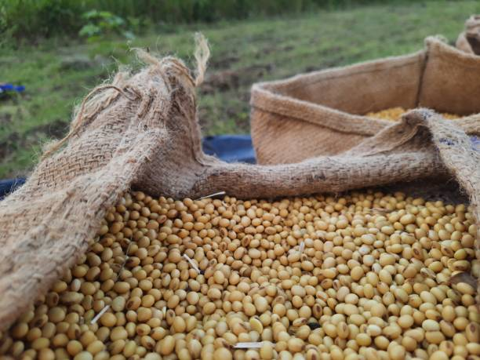
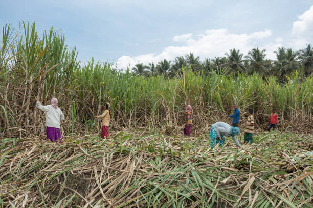
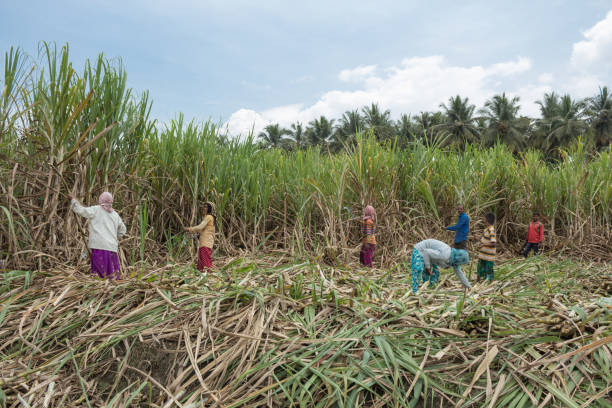

1. ARHAR / 1.अरहर


Arhar, or pigeon pea, is primarily grown in Chhattisgarh during the Kharif season (June to October). The state accounts for a significant share of its cultivation, with strong markets in Madhya Pradesh and Maharashtra. It thrives in well-drained, loamy soils with a pH of 6.0 to 7.5. Optimal soil temperatures range from 25°C to 30°C. The crop typically requires 5-6 months from planting to harvest. Resources needed include moderate water and fertilizers. Demand for Arhar is particularly high in states like Karnataka and Tamil Nadu, where it is a staple pulse in various cuisines.
अरहर, या अरहर, मुख्य रूप से छत्तीसगढ़ में ख़रीफ़ सीज़न (जून से अक्टूबर) के दौरान उगाई जाती है। मध्य प्रदेश और महाराष्ट्र में मजबूत बाजारों के साथ, राज्य की इसकी खेती में महत्वपूर्ण हिस्सेदारी है। यह 6.0 से 7.5 पीएच वाली अच्छी जल निकासी वाली, दोमट मिट्टी में पनपता है। इष्टतम मिट्टी का तापमान 25°C से 30°C के बीच होता है। फसल को बोने से लेकर कटाई तक आमतौर पर 5-6 महीने की आवश्यकता होती है। आवश्यक संसाधनों में मध्यम पानी और उर्वरक शामिल हैं। अरहर की मांग विशेष रूप से कर्नाटक और तमिलनाडु जैसे राज्यों में अधिक है, जहां यह विभिन्न व्यंजनों में मुख्य दाल है।
2. MOONG / 2.मूंग


Moong, or green gram, is mainly grown in Chhattisgarh during the Kharif season (June to October) and Rabi season (November to March). It is extensively cultivated in Maharashtra and Karnataka, which also represent significant market shares. Moong prefers well-drained sandy or loamy soils with a pH of 6.0 to 7.5. Optimal soil temperatures range from 25°C to 35°C. The crop matures in about 60-90 days, requiring moderate water and nutrients. Demand for moong is particularly high in states like Gujarat and Punjab, where it is valued for its nutritional benefits and culinary versatility.
मूंग, या हरा चना, मुख्य रूप से छत्तीसगढ़ में ख़रीफ़ सीज़न (जून से अक्टूबर) और रबी सीज़न (नवंबर से मार्च) के दौरान उगाया जाता है। इसकी खेती महाराष्ट्र और कर्नाटक में बड़े पैमाने पर की जाती है, जो महत्वपूर्ण बाजार हिस्सेदारी का भी प्रतिनिधित्व करते हैं। मूंग 6.0 से 7.5 पीएच वाली अच्छी जल निकासी वाली रेतीली या दोमट मिट्टी को पसंद करती है। इष्टतम मिट्टी का तापमान 25°C से 35°C के बीच होता है। फसल लगभग 60-90 दिनों में पक जाती है, जिसके लिए मध्यम पानी और पोषक तत्वों की आवश्यकता होती है। मूंग की मांग विशेष रूप से गुजरात और पंजाब जैसे राज्यों में अधिक है, जहां इसके पोषण संबंधी लाभों और पाक बहुमुखी प्रतिभा के लिए इसकी सराहना की जाती है।
3. URAD / 3.उड़द


Urad, or black gram, is primarily grown in Chhattisgarh during the Kharif season (June to October). It is most extensively cultivated and sold in Maharashtra, which holds a significant market share. Urad thrives in well-drained, sandy loam or clayey soils with a pH of 6.0 to 7.5. The optimal soil temperature for growth is between 25°C and 35°C. The crop typically matures in 90-150 days, requiring moderate water and nutrients. Demand is particularly high in states like Tamil Nadu and West Bengal, where urad is essential in traditional dishes and dals.
उड़द, या काला चना, मुख्य रूप से छत्तीसगढ़ में ख़रीफ़ सीज़न (जून से अक्टूबर) के दौरान उगाया जाता है। इसकी सबसे अधिक खेती और बिक्री महाराष्ट्र में की जाती है, जो महत्वपूर्ण बाजार हिस्सेदारी रखता है। उड़द 6.0 से 7.5 पीएच वाली अच्छी जल निकासी वाली, रेतीली दोमट या चिकनी मिट्टी में पनपती है। विकास के लिए इष्टतम मिट्टी का तापमान 25°C और 35°C के बीच है। फसल आम तौर पर 90-150 दिनों में पक जाती है, जिसके लिए मध्यम पानी और पोषक तत्वों की आवश्यकता होती है। विशेष रूप से तमिलनाडु और पश्चिम बंगाल जैसे राज्यों में मांग अधिक है, जहां पारंपरिक व्यंजनों और दालों में उड़द आवश्यक है।
4. MASOOR / 4.मसूर
Masoor, or red lentil, is primarily grown in Chhattisgarh during the Rabi season (November to March). It is widely cultivated and has a significant market presence in Madhya Pradesh and West Bengal. Masoor prefers well-drained, loamy soils with a pH of 6.0 to 7.5. Optimal soil temperatures for growth range from 20°C to 30°C. The crop matures in about 90-120 days, requiring moderate water and minimal fertilizers. Demand for masoor is particularly high in states like Punjab and Uttar Pradesh, where it is a popular ingredient in various traditional dishes and dals.
मसूर, या लाल मसूर, मुख्य रूप से छत्तीसगढ़ में रबी सीज़न (नवंबर से मार्च) के दौरान उगाया जाता है। इसकी व्यापक रूप से खेती की जाती है और मध्य प्रदेश और पश्चिम बंगाल में इसकी महत्वपूर्ण बाजार उपस्थिति है। मसूर को 6.0 से 7.5 पीएच वाली अच्छी जल निकासी वाली, दोमट मिट्टी पसंद है। विकास के लिए इष्टतम मिट्टी का तापमान 20°C से 30°C तक होता है। फसल लगभग 90-120 दिनों में पक जाती है, इसमें मध्यम पानी और न्यूनतम उर्वरक की आवश्यकता होती है। मसूर की मांग विशेष रूप से पंजाब और उत्तर प्रदेश जैसे राज्यों में अधिक है, जहां यह विभिन्न पारंपरिक व्यंजनों और दालों में एक लोकप्रिय घटक है।
5. KULTHI / 5.कुल्थी


Kulthi, or horse gram, is primarily grown in Chhattisgarh during the Kharif season (June to October). It is mostly cultivated and sold in states like Karnataka and Maharashtra, which hold significant market shares. Kulthi thrives in well-drained, rocky, or sandy soils with a pH of 6.0 to 7.5. The optimal soil temperature for growth ranges from 20°C to 30°C. The crop matures in about 90-120 days, requiring minimal water and fertilizers, making it drought-resistant. Demand for kulthi is particularly high in states like Tamil Nadu and Andhra Pradesh, where it is valued for its nutritional benefits and culinary uses.
कुल्थी, या कुल्थी, मुख्य रूप से छत्तीसगढ़ में ख़रीफ़ सीज़न (जून से अक्टूबर) के दौरान उगाई जाती है। इसकी खेती और बिक्री ज्यादातर कर्नाटक और महाराष्ट्र जैसे राज्यों में की जाती है, जिनका बाजार में महत्वपूर्ण हिस्सा है। कुलथी 6.0 से 7.5 पीएच वाली अच्छी जल निकासी वाली, पथरीली या रेतीली मिट्टी में पनपती है। विकास के लिए इष्टतम मिट्टी का तापमान 20°C से 30°C के बीच होता है। फसल लगभग 90-120 दिनों में पक जाती है, इसमें न्यूनतम पानी और उर्वरक की आवश्यकता होती है, जो इसे सूखा प्रतिरोधी बनाती है। कुल्थी की मांग विशेष रूप से तमिलनाडु और आंध्र प्रदेश जैसे राज्यों में अधिक है, जहां इसके पोषण संबंधी लाभों और पाक उपयोगों के लिए इसे महत्व दिया जाता है।
6. GROUNDNUT / 6.मूंगफली


Groundnut, or peanut, is primarily grown in Chhattisgarh during the Kharif season (June to October). The state has significant cultivation, with major markets in Gujarat and Maharashtra. Groundnut thrives in well-drained sandy loam or clayey soils with a pH of 6.0 to 7.0. Optimal soil temperatures range from 25°C to 30°C. The crop matures in about 120-150 days, requiring moderate water and fertilizers. Demand for groundnut is particularly high in states like Tamil Nadu and Andhra Pradesh, where it is used in cooking, snacks, and oil production, contributing to its popularity in various culinary applications.
मूंगफली, या मूँगफली, मुख्य रूप से छत्तीसगढ़ में ख़रीफ़ सीज़न (जून से अक्टूबर) के दौरान उगाई जाती है। गुजरात और महाराष्ट्र में प्रमुख बाजारों के साथ, राज्य में महत्वपूर्ण खेती होती है। मूंगफली 6.0 से 7.0 पीएच वाली अच्छी जल निकासी वाली रेतीली दोमट या चिकनी मिट्टी में पनपती है। इष्टतम मिट्टी का तापमान 25°C से 30°C के बीच होता है। फसल लगभग 120-150 दिनों में पक जाती है, इसमें मध्यम पानी और उर्वरक की आवश्यकता होती है। मूंगफली की मांग विशेष रूप से तमिलनाडु और आंध्र प्रदेश जैसे राज्यों में अधिक है, जहां इसका उपयोग खाना पकाने, स्नैक्स और तेल उत्पादन में किया जाता है, जो विभिन्न पाक अनुप्रयोगों में इसकी लोकप्रियता में योगदान देता है।
7. SESAME / 7. तिल


Sesame, or til, is primarily grown in Chhattisgarh during the Kharif season (June to October). It is most extensively cultivated and marketed in Gujarat and Rajasthan. Sesame prefers well-drained sandy or loamy soils with a pH of 6.0 to 7.5. Optimal soil temperatures for growth range from 25°C to 30°C. The crop matures in about 90-120 days and requires moderate water and fertilizers. Demand for sesame is particularly high in states like Tamil Nadu and Andhra Pradesh, where it is valued for its oil, snacks, and traditional dishes, making it a staple in many cuisines.
तिल, या तिल, मुख्य रूप से छत्तीसगढ़ में ख़रीफ़ सीज़न (जून से अक्टूबर) के दौरान उगाया जाता है। इसकी खेती और विपणन सबसे अधिक गुजरात और राजस्थान में किया जाता है। तिल 6.0 से 7.5 पीएच वाली अच्छी जल निकासी वाली रेतीली या दोमट मिट्टी को तरजीह देता है। विकास के लिए इष्टतम मिट्टी का तापमान 25°C से 30°C तक होता है। फसल लगभग 90-120 दिनों में पक जाती है और इसके लिए मध्यम पानी और उर्वरक की आवश्यकता होती है। तिल की मांग विशेष रूप से तमिलनाडु और आंध्र प्रदेश जैसे राज्यों में अधिक है, जहां इसके तेल, स्नैक्स और पारंपरिक व्यंजनों के लिए इसे महत्व दिया जाता है, जिससे यह कई व्यंजनों में प्रमुख बन जाता है।
8. SOYABEAN / 8.सोयाबीन
 

Soybean in Chhattisgarh is primarily grown during the Kharif season, from June to September. It has significant market share in states like Madhya Pradesh and Maharashtra, where it's both cultivated and sold extensively. Soybeans thrive in well-drained, loamy to sandy soils with a pH of 6.0 to 7.0. Ideal soil temperatures range from 20°C to 30°C. Growing soybeans requires about 3-4 months and moderate resources, including water and fertilizers. Demand is particularly high in states like Punjab and Haryana, where soy is used for oil extraction and animal feed.
छत्तीसगढ़ में सोयाबीन मुख्य रूप से ख़रीफ़ सीज़न के दौरान जून से सितंबर तक उगाया जाता है। मध्य प्रदेश और महाराष्ट्र जैसे राज्यों में इसकी महत्वपूर्ण बाजार हिस्सेदारी है, जहां इसकी खेती और बिक्री दोनों बड़े पैमाने पर की जाती है। सोयाबीन 6.0 से 7.0 पीएच वाली अच्छी जल निकासी वाली, दोमट से रेतीली मिट्टी में पनपती है। आदर्श मिट्टी का तापमान 20°C से 30°C के बीच होता है। सोयाबीन उगाने में लगभग 3-4 महीने और पानी और उर्वरक सहित मध्यम संसाधनों की आवश्यकता होती है। मांग विशेष रूप से पंजाब और हरियाणा जैसे राज्यों में अधिक है, जहां सोया का उपयोग तेल निष्कर्षण और पशु चारे के लिए किया जाता है।
9. MUSTARD / 9.सरसों


Mustard in Chhattisgarh is primarily grown during the Rabi season, from October to February. It has a strong market share in states like Rajasthan and Madhya Pradesh, where it's both cultivated and sold extensively. Mustard prefers well-drained, loamy soils with a pH of 6.0 to 7.5. The ideal soil temperature for growth is between 15°C and 25°C. The crop requires about 3-4 months to mature and moderate resources, including irrigation and fertilizers. Demand for mustard is particularly high in states like Haryana and Punjab, mainly for oil production and cooking.
छत्तीसगढ़ में सरसों मुख्य रूप से रबी मौसम के दौरान अक्टूबर से फरवरी तक उगाई जाती है। राजस्थान और मध्य प्रदेश जैसे राज्यों में इसकी मजबूत बाजार हिस्सेदारी है, जहां इसकी खेती और बिक्री दोनों बड़े पैमाने पर की जाती है। सरसों 6.0 से 7.5 पीएच वाली अच्छी जल निकासी वाली, दोमट मिट्टी पसंद करती है। विकास के लिए आदर्श मिट्टी का तापमान 15°C और 25°C के बीच है। फसल को परिपक्व होने में लगभग 3-4 महीने लगते हैं और सिंचाई और उर्वरक सहित संसाधनों की आवश्यकता होती है। सरसों की मांग विशेष रूप से हरियाणा और पंजाब जैसे राज्यों में अधिक है, मुख्य रूप से तेल उत्पादन और खाना पकाने के लिए।
10. LINSEED / 10.अलसी

Linseed in Chhattisgarh is primarily grown during the Rabi season, from October to February. It has significant market share in states like Madhya Pradesh and Rajasthan, where it is extensively cultivated and sold. Linseed thrives in well-drained, loamy to clayey soils with a pH of 6.0 to 7.5. The ideal soil temperature for growth ranges from 15°C to 20°C. The crop takes about 3-4 months to mature and requires moderate resources, including irrigation and fertilizers. Demand is particularly high in states like Gujarat and Maharashtra, mainly for oil extraction and health products.
छत्तीसगढ़ में अलसी मुख्य रूप से रबी मौसम के दौरान अक्टूबर से फरवरी तक उगाई जाती है। मध्य प्रदेश और राजस्थान जैसे राज्यों में इसकी महत्वपूर्ण बाजार हिस्सेदारी है, जहां इसकी बड़े पैमाने पर खेती और बिक्री की जाती है। अलसी 6.0 से 7.5 पीएच वाली अच्छी जल निकासी वाली, दोमट से चिकनी मिट्टी में पनपती है। विकास के लिए आदर्श मिट्टी का तापमान 15°C से 20°C के बीच होता है। फसल को पकने में लगभग 3-4 महीने लगते हैं और सिंचाई और उर्वरक सहित मध्यम संसाधनों की आवश्यकता होती है। मुख्य रूप से तेल निष्कर्षण और स्वास्थ्य उत्पादों के लिए गुजरात और महाराष्ट्र जैसे राज्यों में मांग अधिक है।
11. COTTON / 11.कपास

Cotton in Chhattisgarh is primarily grown during the Kharif season, from June to October. It has a significant market share in states like Maharashtra and Gujarat, where it is extensively cultivated and sold. Cotton thrives in well-drained, loamy to sandy soils with a pH of 6.0 to 7.5. Ideal soil temperatures range from 20°C to 30°C. The crop takes about 5-6 months to mature and requires substantial resources, including water and fertilizers. Demand is particularly high in states like Tamil Nadu and Andhra Pradesh, mainly for textile production and oil extraction.
छत्तीसगढ़ में कपास मुख्य रूप से ख़रीफ़ सीज़न के दौरान जून से अक्टूबर तक उगाया जाता है। महाराष्ट्र और गुजरात जैसे राज्यों में इसकी महत्वपूर्ण बाजार हिस्सेदारी है, जहां इसकी बड़े पैमाने पर खेती और बिक्री की जाती है। कपास 6.0 से 7.5 पीएच वाली अच्छी जल निकासी वाली, दोमट से रेतीली मिट्टी में पनपती है। आदर्श मिट्टी का तापमान 20°C से 30°C के बीच होता है। फसल को परिपक्व होने में लगभग 5-6 महीने लगते हैं और पानी और उर्वरक सहित पर्याप्त संसाधनों की आवश्यकता होती है। मुख्य रूप से कपड़ा उत्पादन और तेल निष्कर्षण के लिए तमिलनाडु और आंध्र प्रदेश जैसे राज्यों में मांग अधिक है।
12. SUGARCANE / 12.गन्ना
 

Sugarcane in Chhattisgarh is primarily grown during the Kharif season, from June to October. It has a notable market share in states like Uttar Pradesh and Maharashtra, where it is extensively cultivated and sold. Sugarcane thrives in well-drained, loamy to clayey soils with a pH of 6.0 to 8.0. The ideal soil temperature for growth ranges from 20°C to 30°C. The crop takes about 10-12 months to mature and requires substantial resources, including water and fertilizers. Demand is particularly high in states like Karnataka and Gujarat, mainly for sugar production and biofuel.
छत्तीसगढ़ में गन्ना मुख्य रूप से ख़रीफ़ सीज़न के दौरान जून से अक्टूबर तक उगाया जाता है। उत्तर प्रदेश और महाराष्ट्र जैसे राज्यों में इसकी उल्लेखनीय बाजार हिस्सेदारी है, जहां इसकी बड़े पैमाने पर खेती और बिक्री की जाती है। गन्ना 6.0 से 8.0 पीएच वाली अच्छी जल निकासी वाली, दोमट से चिकनी मिट्टी में पनपता है। विकास के लिए आदर्श मिट्टी का तापमान 20°C से 30°C के बीच होता है। फसल को परिपक्व होने में लगभग 10-12 महीने लगते हैं और पानी और उर्वरक सहित पर्याप्त संसाधनों की आवश्यकता होती है। कर्नाटक और गुजरात जैसे राज्यों में मुख्य रूप से चीनी उत्पादन और जैव ईंधन की मांग अधिक है।
13. TENDU LEAVES / 13.तेंदू पत्ता


Tendu leaves in Chhattisgarh are primarily harvested during the summer season, from April to June. They are most cultivated and sold in states like Madhya Pradesh and Maharashtra. Tendu plants thrive in well-drained, sandy to loamy soils with a pH of 6.0 to 7.5. Ideal soil temperatures range from 25°C to 35°C. The leaves are typically harvested after about 3-5 years of growth, requiring minimal resources once established. Demand is particularly high in states like Gujarat and Rajasthan, primarily for bidi (cigarette) production and traditional uses, making it an important non-timber forest product.
छत्तीसगढ़ में तेंदू पत्तों की कटाई मुख्य रूप से गर्मी के मौसम में, अप्रैल से जून तक की जाती है। इनकी सबसे अधिक खेती और बिक्री मध्य प्रदेश और महाराष्ट्र जैसे राज्यों में की जाती है। तेंदू के पौधे 6.0 से 7.5 पीएच वाली अच्छी जल निकासी वाली, रेतीली से दोमट मिट्टी में पनपते हैं। आदर्श मिट्टी का तापमान 25°C से 35°C के बीच होता है। आमतौर पर पत्तियों की कटाई विकास के लगभग 3-5 वर्षों के बाद की जाती है, जिसके लिए एक बार स्थापित होने के बाद न्यूनतम संसाधनों की आवश्यकता होती है। मुख्य रूप से बीड़ी (सिगरेट) उत्पादन और पारंपरिक उपयोग के लिए गुजरात और राजस्थान जैसे राज्यों में मांग अधिक है, जिससे यह एक महत्वपूर्ण गैर-लकड़ी वन उत्पाद बन जाता है।
14. TOBACCO / 14.तम्बाकू


Tobacco in Chhattisgarh is primarily grown during the Kharif season, from June to October. It is extensively cultivated and sold in states like Andhra Pradesh and Karnataka. Tobacco prefers well-drained, sandy to loamy soils with a pH of 5.5 to 6.5. The ideal soil temperature for growth ranges from 20°C to 30°C. The crop typically takes about 4-5 months to mature and requires moderate resources, including water and fertilizers. Demand is particularly high in states like Gujarat and Maharashtra, mainly for cigarette and bidi production, making it a significant cash crop in the region.
छत्तीसगढ़ में तम्बाकू मुख्य रूप से ख़रीफ़ सीज़न के दौरान जून से अक्टूबर तक उगाया जाता है। आंध्र प्रदेश और कर्नाटक जैसे राज्यों में इसकी बड़े पैमाने पर खेती और बिक्री की जाती है। तम्बाकू 5.5 से 6.5 पीएच वाली अच्छी जल निकासी वाली, रेतीली से दोमट मिट्टी को पसंद करता है। विकास के लिए आदर्श मिट्टी का तापमान 20°C से 30°C के बीच होता है। फसल को पकने में आमतौर पर लगभग 4-5 महीने लगते हैं और पानी और उर्वरक सहित मध्यम संसाधनों की आवश्यकता होती है। गुजरात और महाराष्ट्र जैसे राज्यों में मुख्य रूप से सिगरेट और बीड़ी उत्पादन की मांग विशेष रूप से अधिक है, जिससे यह क्षेत्र में एक महत्वपूर्ण नकदी फसल बन जाती है।